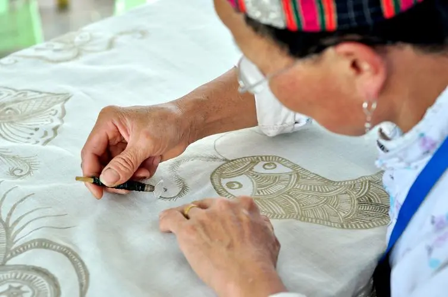

苗族蜡染是一种历史悠久的传统工艺，起源于秦汉时期，至今已有2000多年的历史。苗族蜡染是一种独特的印染技术，主要流传于苗族聚居的贵州、四川、云南等地。这种技艺涉及将蜡液绘制在布上，形成各种图案，然后进行染色，染色后去除蜡，布上就会留下白色的图案。这种技术最初可能是在无意中发现的，后来被苗族人民发展成一种独特的艺术形式。

苗族蜡染的图案通常富含象征意义，反映了苗族人的生活、历史和文化。其工艺特点是以蓝白两色为主，常与挑花、补花等技艺结合，形成了独特的风格和魅力。随着时间的推移，苗族蜡染技艺不仅在技术上得到了发展，在艺术上也形成了独特的风格。其被视为苗族文化的重要组成部分，对于了解苗族历史和文化有着重要的意义。
有一个聪明美丽的苗族姑娘并不满足于衣服的均一色彩，总希望能在裙子上染出各种各样的花卉图案来
可是一件一件的手工绘制实在太麻烦
但她一时又想不出什么好办法来，终日为此闷闷不乐。
一天，姑娘又看着一簇簇一丛丛的鲜花久久发楞，办法没想出来却在沉思中昏昏入睡。
朦胧中有一个衣着漂亮的花仙子把她带到了一个百花园中
园里有无数的奇花异草，鸟语花香、蝶舞蜂忙。
姑娘在花园中看呀看呀，看得入了迷，连蜜蜂爬满了她的衣裙也浑然不知。等她醒来一看，才知道刚才是睡着了，
可是低头再看：花丛中的蜜蜂真的刚刚飞走
而且在她的衣裙上留下了斑斑点点的蜜汁和蜂蜡，很不好看。
她只好把衣裙拿到存放着靛蓝的染桶中去，想重新把衣裙染一次，试图覆盖掉蜡迹。染完之后，又拿到沸水中去漂清浮色。
当姑娘从沸水中取出衣裙的时候
奇迹出现了：深蓝色的衣裙上被蜂蜡沾过的地方出现了美丽的白花！姑娘心头一动，立即找来蜂蜡
加热熬化后用树枝在白布上画出了蜡花图案，然后放到靛蓝染液中去染色，最后用沸水熔掉蜂蜡，
布面上就现出了各种各样的白花，哦！染缸中居然染出了印花布，姑娘高兴地唱起了山歌。
人们听到了姑娘的歌声，纷纷来到她家听她讲百花园里的梦境、观看她染出的花裙、学习她描花绘图的技艺，
大家回到自己家里之后，照着姑娘教给的方法，也都染出了花样繁多的花布。
从此，蜡染技术就在苗族及与之杂居的布依、瑶族等兄弟民族之间流传开来了。